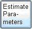

The traditional FRAP fitting is usually done based on the bleached area for a single diffusion rate. The Virtual FRAP is able to fit more accurately by taking the spatial data into account. The fitting is conducted over all the selected ROI rings instead of only bleached area. Moreover, the Virtual FRAP is able to deal with a secondary diffusion rate.
The estimated parameters for one diffusing component are primary diffusion rate, primary mobile fraction and bleaching while monitoring rate. The estimated parameters for two diffusing components are primary diffusion rate, primary mobile fraction, secondary diffusion rate, secondary mobile fraction and bleaching while monitoring rate.
The last step of data analysis work flow is to estimate diffusion parameters. To start the estimation wizard, users need to click on the “Estimate Parameters” button . A spatial reference simulation is then started and followed by optimization. The best estimates are acquired by minimizing the errors between the simulated data and the experimental data.
-
Understanding the best estimates
Once the simulation and optimization is completed, the results for selected models will be shown in the different wizard pages. Figure 3-10 shows the estimate results page for two diffusing components. The top half of the page displays the best estimates for such a model. The bottom half is a real-time plot which illustrates the difference between simulated data and experimental data according to the parameter changes.
In
this page, users are able to tune a primary diffusion rate together with a
secondary diffusion rate and the bleach while monitoring rate. Users can set
values either by typing into the text fields or tuning the slider bars. The
different colors of the plots represent how the diffusion works in different
ROIs of the cell. Clicking on the show ROIs button
 will show the ROIs
distinguished by different colors. Users can click on the best fit button
to get the
best fit parameters based on the current parameter initials in the text
fields.
will show the ROIs
distinguished by different colors. Users can click on the best fit button
to get the
best fit parameters based on the current parameter initials in the text
fields.
In
addition, the Virtual FRAP evaluates the confidence intervals for each
parameter. By clicking evaluate confidence interval button
 , the
evaluation then starts and the results will be shown in the confidence
interval panel shown in Figure 3-11. The confidence interval panel contains
several plot panels, one for each parameter. All the plot panels are able to
be expanded or collapsed and the default plot is for primary diffusion rate.
Users can click on
, the
evaluation then starts and the results will be shown in the confidence
interval panel shown in Figure 3-11. The confidence interval panel contains
several plot panels, one for each parameter. All the plot panels are able to
be expanded or collapsed and the default plot is for primary diffusion rate.
Users can click on  to
expand a specific plot panel or
to
expand a specific plot panel or
 to collapse a
specific plot panel.
to collapse a
specific plot panel.

Figure 3-10 Parameter Estimation Results for Two Diffusing Components

Figure 3-11 The Confidence Interval Panel
-
Model parameter comparison and best model selection
The last page of “Estimate Parameters” wizard is a summary page. The page has four parts. Firstly, a table lists all estimates for one or two models according to the selection. This is visible by default. Secondly, a plot contains all the plots for experimental data and simulated selected model data, which is invisible by default. The third part is a table showing errors between experimental data and simulated data under each ROI for selected models. The last part allows users to choose the best model base on their judgement, however, a machine made decision will be given by default. The summary page is illustrated in Figure 3-12.

Figure 3-12 The Summary Page in “Estimate Parameters” Wizard